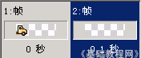
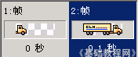
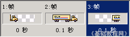
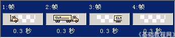

Ulead Gif Animator 基础教程
十、动作动画 返回
动作动画一般是各个帧的图片，图片的位置有所改变，从而产生动画效果，下面我们来看一个练习；
1、运行程序
1）在桌面双击Ulead Gif Animator图标，或者在文件夹中双击它的图标，就可以启动程序；
2）启动成功后，显示一个默认的空白文档，如果出现向导提示，点“关闭”；

2、制作动画
1）点菜单“文件－打开图像..”命令，打开本课文件夹中的images里面的 che 文件，这是一幅小车图片；
2）选择箭头工具，在小车上点一下，周围出来虚线框，选中小车；
点菜单“编辑－复制”命令，复制一下这个小车；
然后把小车往左边拖动，只露出车头，
3）点帧面板中的“添加帧” 按钮，添加一个空白帧；
按钮，添加一个空白帧；

4）点菜单“编辑－粘贴”命令，拷贝一个小车过来，这个车就放中间；

5）同样再点“添加帧”按钮，点“编辑－粘贴”，这个小车往右边移动，只露出车尾；

6）再点“添加帧”按钮，添加一个空白帧，按住Shift键点一下第1帧，全部选中，
点下边的“帧面板命令”按钮，选“帧属性”命令，把时间设为30，这样每帧0.3秒；

7）点菜单“文件－另存为－UGA”命令，以“小车”为文件名，保存文件到自己的文件夹；
再点菜单“文件－另存为－Gif文件..”，也以“小车”为文件名，保存文件到自己的文件夹，这次保存的是是Gif图片文件；
本节学习了制作动作动画的基本方法，如果你成功地完成了练习，请继续学习；
本教程由86团学校TeliuTe制作|著作权所有转载和引用本站内容，请保留版权信息和本站链接。